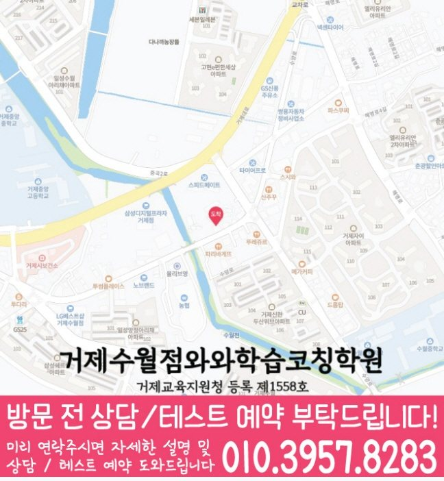

Elementary school Korean · English · Math
수월동 초등학생 국영수학원
수월동 초등학생 국영수학원 선택 전 교과 진도와 기초 학습 자료, 최근 오답과 과목별 가능 학년, 센터 위치·비용 확인 기준을 안내합니다.
01 Quick answer
수월동에서 먼저 확인할 내용
수월동에서 초등학생 국영수학원을 찾는다면 와와학습코칭센터 거제수월점의 과목별 가능 학년을 먼저 확인하세요. 제공된 초등학교 참고 자료와 학생의 실제 교재를 대조하고, 학생의 실제 풀이 기록에 맞게 과목별로 무엇을 먼저 보완할지 정하는 순서가 필요합니다.
대표 학생 상황
세 과목의 과제 순서와 오답 복습 시점을 스스로 정리하기 어려운 초등학생


010-6839-8283상담 전 핵심 안내
경상남도 거제시 수월동에서 초등학생 학원을 찾는 학생과 학부모님을 위해, 영어·수학·국어 학습을 한 흐름으로 연결해 학습 기록이 이어지도록 안내합니다. 지역 센터는 학습 진단을 바탕으로 개념을 탄탄히 하고, 문제풀이와 오답 관리, 국어 독해·서술 학습까지 균형 있게 지도하여 공부 습관이 습관으로 남도록 돕습니다. 수월동 초등학생의 세 과목 학습을 비교한다면 현재 기초와 공부 습관부터 살펴야 합니다. 수월동 초등학생 국영수학원 기준에서 가장 먼저 확인할 점은 아이에게 많은 문제를 한꺼번에 주는 곳인지가 아니라 현재 공백을 과목별로 읽어 주는지입니다.
학습 순서를 정할 때 확인할 내용
영어·수학·국어 영어·수학 중심 학습. 영어는 어휘·문장 이해·독해 흐름을 잡고, 수학은 개념과 유형을 연결해 풀이가 흔들리지 않게 합니다.
수월동 복습 계획에서는 최근 풀이 기록을 바탕으로 다음 보완 순서를 정합니다. 수월동 수업 계획에서는 복습 이력을 바탕으로 학습 상태를 구체적으로 확인합니다.
수월동 국어·영어·수학 학습 계획의 수업 설계는 국어 독해, 영어 어휘, 수학 개념 영역을 각각 따로 보되 서로 영향을 주는 부분까지 연결해야 합니다. 경상남도 거제시 수월동에서 비슷한 과정에 있는 초등학생이 국어에서 근거 찾기를 놓치면 영어 지문의 질문 의도도 흐려질 수 있고, 수학 문장제에서도 조건을 빠뜨릴 가능성이 커집니다. 어휘 학습은 목록을 외우는 데서 끝내지 말고 문장 해석과 짧은 쓰기로 이어져야 합니다. 수학은 계산량보다 개념을 말로 설명하고 풀이 순서를 남기는 연습이 중요하므로, 수월동 초등학생의 국어·영어·수학 학습 점검에서는 과목별 진도와 복습 기록을 함께 비교해 보는 것이 좋습니다.
설명을 듣고 풀이로 확인하는 과정
아이 눈높이로 ‘이해’를 먼저 만듭니다. 어디에서 막히는지 원인을 확인한 뒤, 개념을 다시 연결해 문제를 풀 수 있는 상태로 만들어 줍니다.
오답 관리로 실수를 줄이는 코칭. 틀린 이유를 유형별로 정리하고 다음 풀이에서 반복되지 않게 피드백하여 점진적으로 학습 변화가 기록에 남는지 확인합니다.
현재 교재 진도는 수월동 초등학생 학습 과정을 볼 때 수업 이름보다 실제 운영 방식을 확인하라는 신호로 볼 수 있습니다. 과목별 현재 수준이 다른 수월동 아이에게는 교재, 과제와 보충 설명의 순서를 따로 정하는 편이 좋습니다. 수월동 초등학생 학습 점검에서 학습 관리는 수업 출석만 확인하는 일이 아니라, 아이가 배운 내용을 어떤 문제에서 사용했고 어느 부분을 다시 봐야 하는지 남기는 과정입니다. 초등 복습에서는 과제량보다 오답을 다시 만나는 간격과 확인 방식이 더 중요합니다.
수월동 초등학교 참고 자료를 상담에 활용하는 기준
학교 일정까지 함께 보면, 제공된 초등학교 참고 목록은 수월초·제산초입니다. 센터 안내와 비교할 때, 이 목록은 수업 가능 여부를 보장하지 않으며, 상담에서 학생이 가져온 실제 학교 자료를 대조하기 위한 정보입니다.
상담 전에 정리해 보면, 수월동 초등학생은 교과 진도·알림장·단원평가 자료를 준비해 국어 읽기·문법, 영어 어휘·문장 적용, 수학 단원·풀이 과정을 구분하는 것이 좋습니다. 과목별 기록을 살펴보면, 확인한 내용을 다음 수업과 복습 계획에 어떻게 반영하는지 살펴보세요.
현재 수준에 맞춘 점검 단계
1. 현재 수준 확인(진단). 학년, 학교 진도, 최근 학습 결과를 바탕으로 기초 개념과 자주 틀리는 포인트를 먼저 점검합니다.
2. 개념 정리와 맞춤 유형 학습. 바로 문제풀이로 넘어가기보다 핵심 개념을 정리한 뒤, 쉬운 유형부터 단계적으로 난이도를 확장합니다.
3. 오답 노트와 학습 피드백. 틀린 문제를 단순 재풀이하지 않고 ‘왜 틀렸는지-다음엔 어떻게 풀지’를 정리해 실수를 줄입니다.
교과 단계별로 나눠 보는 학습 과제
초등 과정. 독해에서 핵심을 찾는 방법과 기본 문장 구성 훈련을 함께 진행합니다.
수학 개념을 단원 흐름대로 정리하고 대표 유형을 반복 학습해 흔들림을 줄입니다. 영어는 문장 구조와 독해 전략을 점검하며 시험형 문제에 적용합니다.
학교 진도와 시험 대비를 맞춰 약한 단원과 자주 틀리는 유형을 집중 관리합니다. 국어는 근거 찾기-서술 구성-표현 연습까지 단계적으로 강화합니다.
영수 보강/진도 맞춤. 학원/학교 진도 차이를 고려해 필요한 부분을 빠짐없이 보완합니다. 오답 패턴을 분석해 다음 학습 계획에 반영함으로써 점수 변화를 돕습니다.
수월동 지역 센터는 초등학생의 현재 실력과 학습 습관을 바탕으로 영어·수학·국어를 단계별로 정리하고, 상담을 통해 학습 방향과 로드맵을 자세히 정리합니다.
02 Consultation examples
수월동 학부모 상담 상황 예시
아래 내용은 실제 고객 후기나 성적 결과가 아니라, 상담에서 확인할 질문을 이해하기 위한 상황 예시입니다.
최근 학교 학습 준비가 한 과목에 치우친 수월동 초등학생을 가정했습니다. 학부모는 현재 교재와 학교 자료를 바탕으로 국어·영어·수학의 병목을 따로 듣고, 가정에서 확인할 기록을 정리합니다.
수월동에서 제공된 초등학교 참고 정보인 수월초·제산초의 목록과 학생의 실제 학교 자료를 대조해 질문하는 상담 상황입니다. 제공 자료와 학생이 가져온 자료를 구분하고, 확인되지 않은 학교 정보나 수업 조건은 임의로 단정하지 않습니다.
03 FAQ
수월동 초등학생 국영수학원 자주 묻는 질문
학부모님이 상담 전에 자주 확인하는 내용을 질문과 답변으로 정리했습니다.
수월동 초등학생 국영수학원 상담은 어떤 학생에게 도움이 될 수 있나요?
그날 공부할 순서를 정하는 연습이 필요하다면 현재 교재와 과제 기록을 준비하세요. 수월동 상담에서는 아이가 혼자 시작할 수 있는 분량부터 확인합니다.
국어·영어·수학 과제량은 수월동 초등학생에게 어떻게 배분하나요?
수월동 상담에서는 국어는 답의 근거 설명, 영어는 어휘·구문·본문 적용, 수학은 개념·유형·계산 과정을 구분해 기록합니다. 주간 계획에서는 각 기록을 보고 다음 과제량을 조정해야 합니다. 초등 교과에서는 읽기·어휘·계산 기초와 스스로 공부를 시작하는 습관을 함께 살핍니다.
제공된 수월동 초등학교 목록은 수업 가능 학교를 뜻하나요?
제공 목록에서 수월초·제산초 등을 확인할 수 있지만 모든 학교의 수업 가능 여부를 뜻하지는 않습니다. 실제 범위와 과제 자료를 준비해 상담에서 확인하는 편이 정확합니다. 상담에는 알림장과 단원평가처럼 학생이 실제 사용하는 교과 자료를 준비하는 편이 좋습니다.
수월동 상담 전에 센터 위치와 교습비는 어디에서 확인하나요?
먼저 실제 방문 위치를 위 센터 확인 정보에서 확인할 수 있습니다. 센터별 교습비 확인 버튼에서 제공 자료를 볼 수 있습니다. 이후 수월동 통학 시간과 초등학생 과목 운영 범위를 센터 상담에서 대조하세요.
04 Continue
수월동 페이지 이동
카테고리 전체 지역 또는 앞뒤 지역 안내로 이동할 수 있습니다.